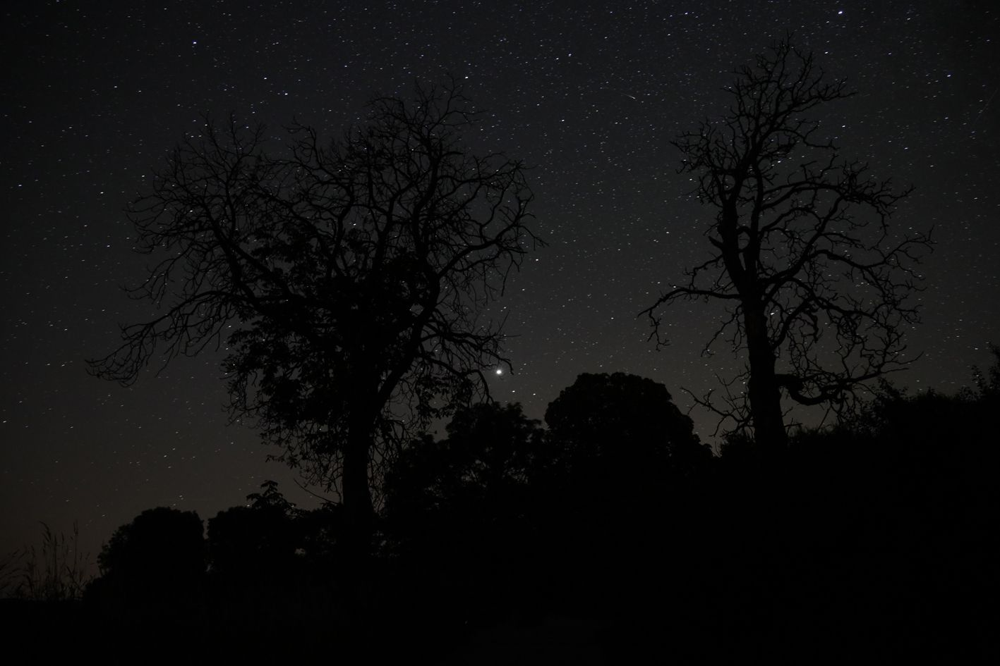
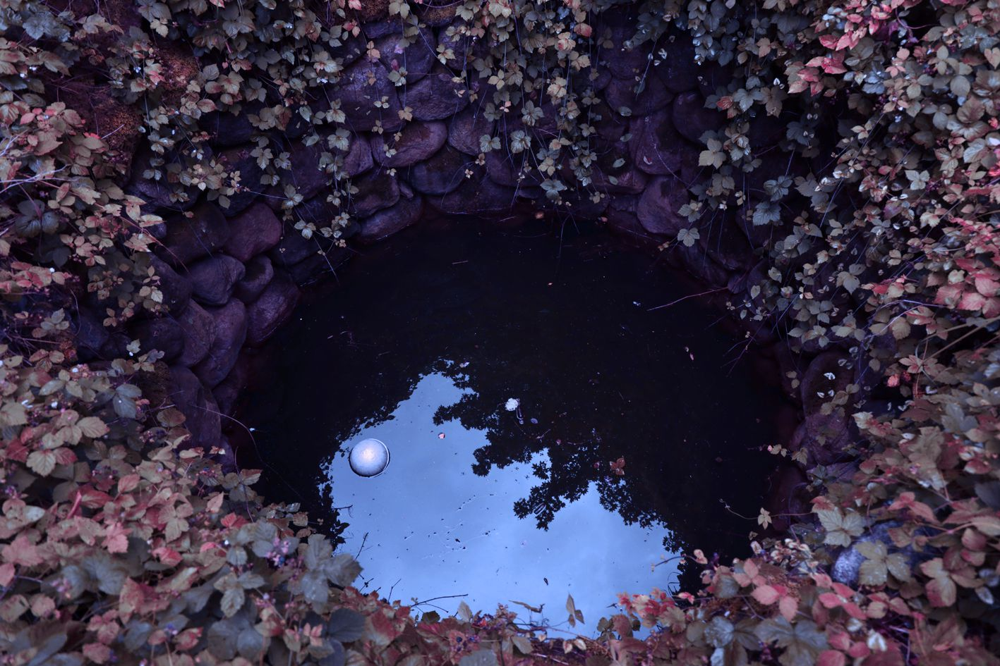
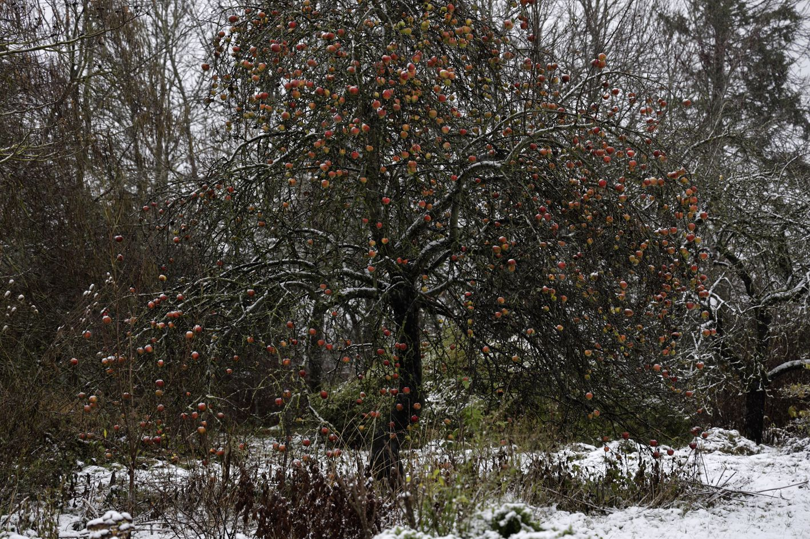

Ansichten aus Hohenbüssow
Historische Notiz und fotografische Eindrücke aus Hohenbüssow (Gemeinde Alt Tellin, Landkreis Vorpommern-Greifswald).



Über diese Seite
Diese Seite bewahrt den Entwurf der Domain hohenbüssow.de als schlanke, wartungsfreie statische Webpräsenz.
Verwandte Archive aus der Region: Mensch und Land (Tollensetaler Stimme) · Historisches Archiv „Leben am Tollensetal“ (tollensetal.org)